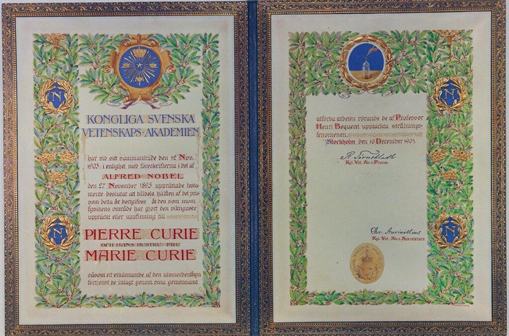
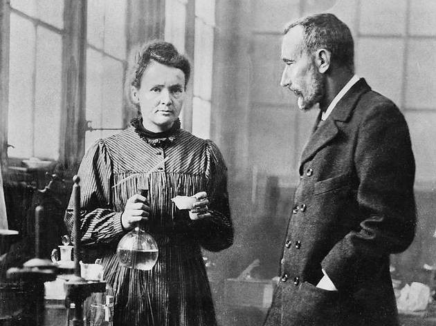
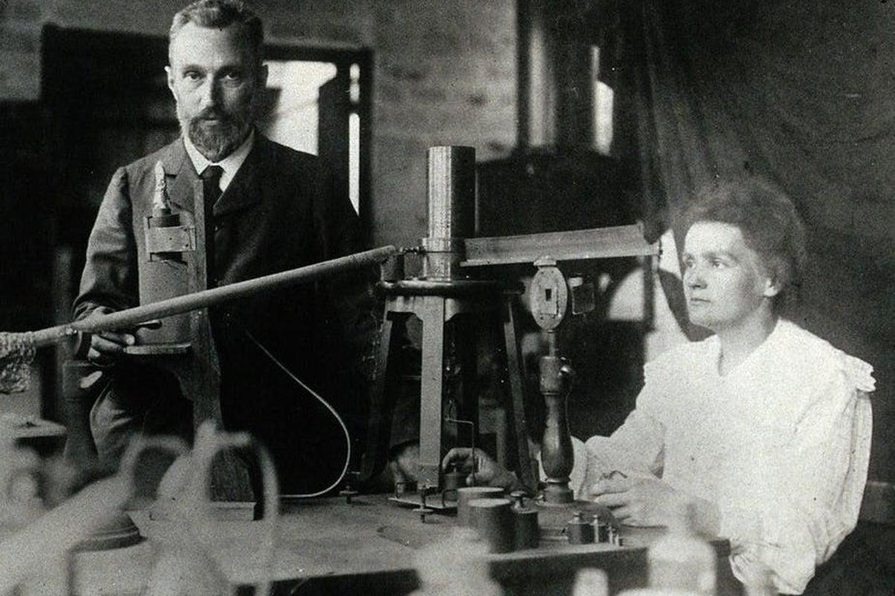
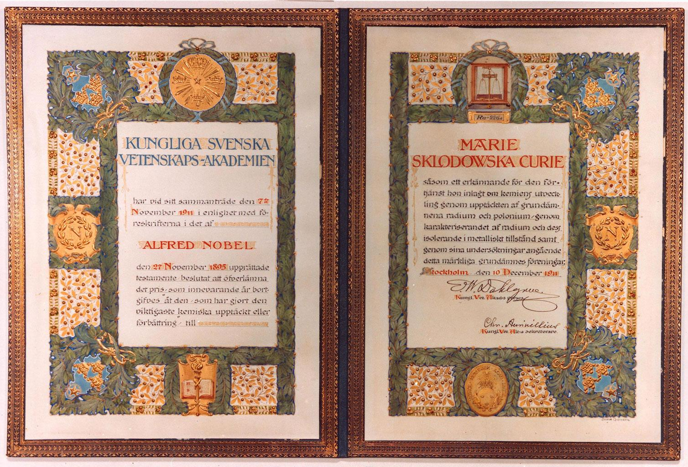

1903MỐC ĐÁNG NHỚ
Nobel Vật lý
Ghi nhận nghiên cứu về hiện tượng bức xạ cùng Pierre Curie và Henri Becquerel.
THÀNH TỰU NỔI BẬT
Các công trình của Marie Curie không chỉ được ghi nhận bằng giải thưởng; chúng còn góp phần định hình những hướng nghiên cứu mới trong vật lý, hóa học và ứng dụng bức xạ.

KHOA HỌCCÁC THÀNH TỰU TIÊU BIỂU

1903MỐC ĐÁNG NHỚ
Ghi nhận nghiên cứu về hiện tượng bức xạ cùng Pierre Curie và Henri Becquerel.
 1898
1898
MỐC ĐÁNG NHỚ
Cùng Pierre Curie công bố phát hiện hai nguyên tố mới trong quá trình nghiên cứu chất phóng xạ.

1910MỐC ĐÁNG NHỚ
Những nghiên cứu và phương pháp hóa học giúp xác định rõ hơn đặc tính của radium.

1911MỐC ĐÁNG NHỚ
Trao cho các đóng góp trong hóa học, đặc biệt là nghiên cứu về radium và polonium.
 1914–1918
1914–1918
MỐC ĐÁNG NHỚ
Góp phần đưa thiết bị chụp X-quang đến gần các cơ sở điều trị trong Thế chiến thứ nhất.
BẢNG TỔNG HỢP
| Thời gian | Thành tựu | Ý nghĩa |
|---|---|---|
| 1898 | Polonium và radium | Mở rộng nghiên cứu về chất phóng xạ và nguyên tố. |
| 1903 | Nobel Vật lý | Ghi nhận nghiên cứu tiên phong về bức xạ. |
| 1911 | Nobel Hóa học | Khẳng định đóng góp trong nghiên cứu và phân lập radium. |
| 1914–1918 | Hỗ trợ X-quang | Đưa kỹ thuật hình ảnh y học đến gần hơn với điều trị thực tế. |
GIÁ TRỊ CỐT LÕI
Các nghiên cứu đặt ra thêm câu hỏi về vật chất và năng lượng.
Thúc đẩy các thế hệ nhà khoa học tiếp tục nghiên cứu hiện tượng phóng xạ.
Cho thấy khoa học có thể góp phần giải quyết nhu cầu thực tiễn của xã hội.